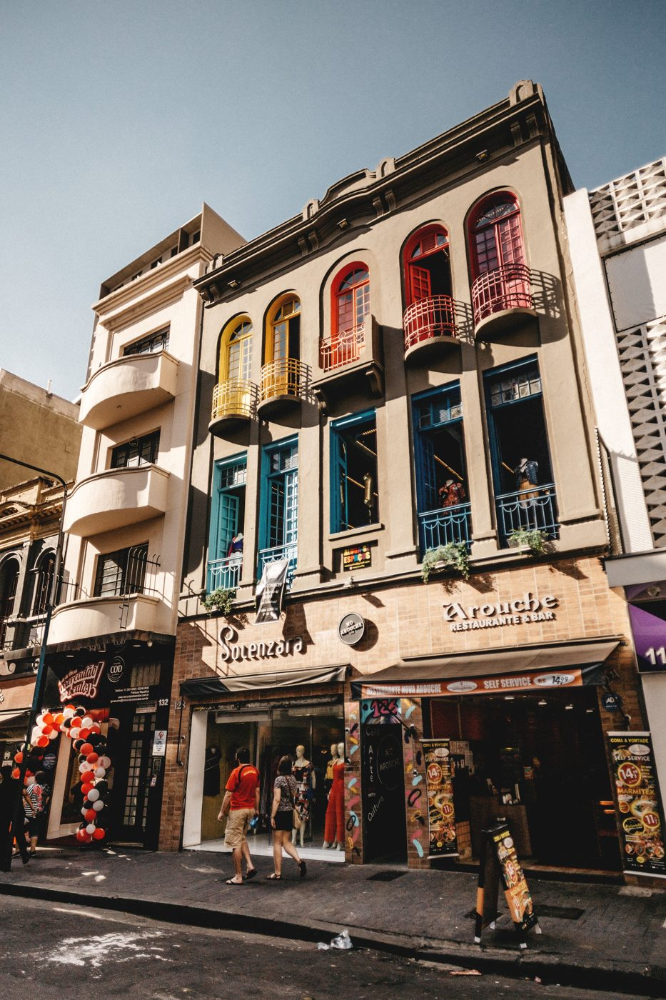
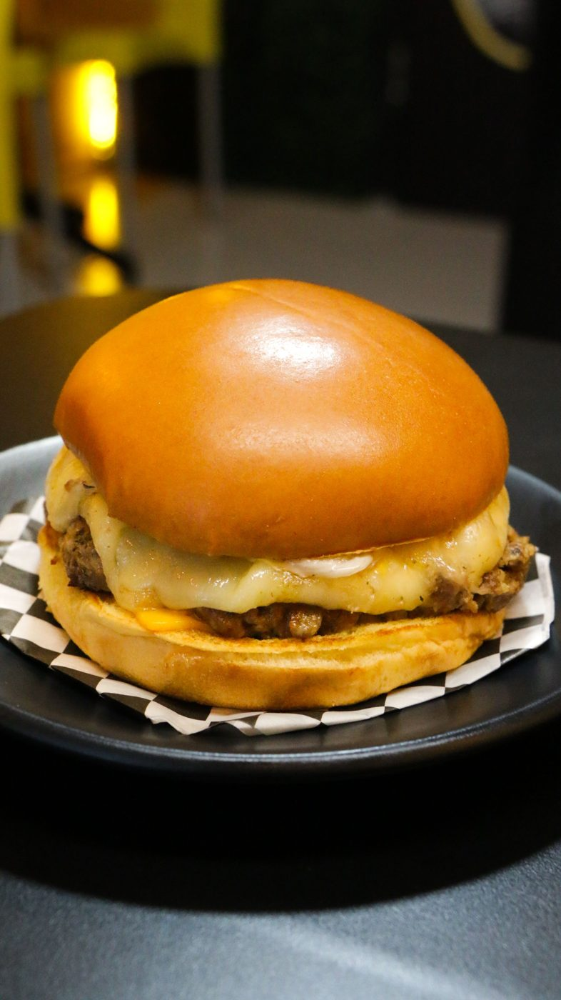
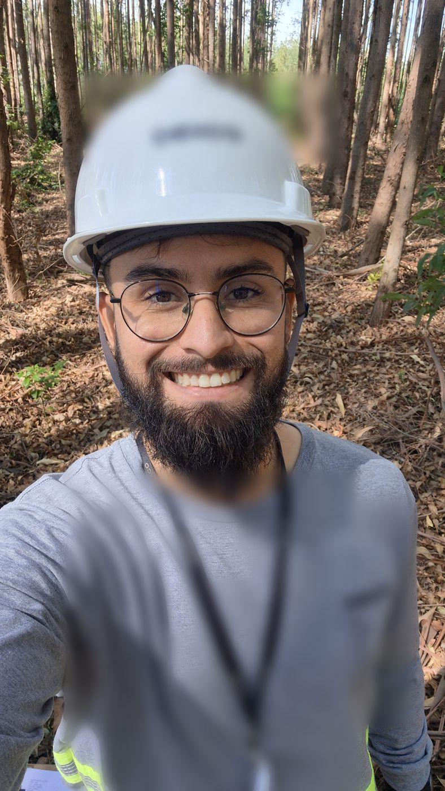

nem todo cliente visita o seu negócio. mas todo cliente pesquisa no Google.
Antes de ligar, chamar no WhatsApp ou ir até a sua porta, o cliente pesquisa o seu negócio no Google e compara com os concorrentes. A Intelles cuida do que ele encontra ali: o seu perfil no Google Meu Negócio, o SEO local, as avaliações e o seu site. Pra ele escolher você.
o cliente decide qual negócio escolher antes de falar com você.
E ele faz isso pelo celular, em poucos minutos, olhando o que o Google mostra sobre você e sobre os seus concorrentes.
o mesmo negócio no Google, sem cuidado e com cuidado.
Este é um perfil de exemplo. Toque nos botões e veja o que muda quando alguém cuida do perfil de verdade.

{{ p.photoNote }}{{ p.desc }}
o Google usa três critérios pra decidir quem aparece no mapa.
Quando alguém pesquisa um serviço perto de onde está, o Google escolhe quais negócios mostrar primeiro no mapa. Ele mesmo explica o que pesa nessa escolha. Dois desses critérios dá pra melhorar, e é aí que a Intelles trabalha.
os serviços que fazem o cliente escolher você.
Eles funcionam juntos: o Google mostra o seu negócio, as avaliações convencem o cliente, e o site e o tour 360° ajudam ele a decidir. Toque em cada serviço pra ver o que está incluído.
{{ svc.name }}
{{ svc.lead }}- {{ it.t }}
site bonito que ninguém encontra no Google é como cartão de visita esquecido na gaveta.
A Intelles cria sites pra negócios locais: leves, feitos pro celular e conectados ao seu perfil no Google. O cliente encontra você no mapa, entra no site, entende em segundos o que você oferece e chama no WhatsApp.

ABERTO AGORAse o seu cliente pesquisa no celular antes de comprar, a Intelles é pra você.
Escolha o seu tipo de negócio e veja o que o seu cliente pesquisa e o que pesa na decisão dele.
{{ seg.text }}
tudo começa com um diagnóstico grátis do seu perfil no Google.
- {{ st.n }} {{ st.k }} {{ st.t }}

do melhoramento genético de eucalipto ao Google do seu negócio.
Oi, eu sou o Natan Telles, fundador da Intelles. Sou capixaba (ES), me formei em Engenharia Florestal na UFLA, em Lavras (MG), passei por Bom Despacho (MG) e hoje moro em Bauru (SP).
Antes de empreender, trabalhei anos em viveiros de pesquisa e melhoramento genético de eucalipto e fui supervisor em multinacionais do setor florestal. Melhoramento genético é um trabalho de longo prazo: um clone novo só avança depois de ser testado, medido e comparado durante anos. Para ser escolhido, ele precisa de uma série de avaliações positivas ao longo do tempo. Com o seu negócio no Google é igual: a escolha do cliente vem de boas avaliações, acumuladas com constância. Ninguém aposta em achismo.
Foi lá que aprendi a trabalhar com método: medir tudo do mesmo jeito, registrar cada dado, comparar os materiais lado a lado e só avançar o que se prova bom de forma consistente. Esse cuidado cria segurança, reputação e uma base de dados que fica mais valiosa a cada ano.
Troquei a carteira assinada pela Intelles e trouxe esse método pro Google do seu negócio. Perfil, avaliações e SEO local também são trabalho de longo prazo. E aqui você fala direto comigo.
os mesmos quatro passos que faziam um clone avançar no viveiro fazem o seu negócio crescer no Google.
o que todo dono de negócio pergunta, respondido sem enrolação.
Se a sua dúvida não estiver aqui, é só perguntar no diagnóstico.
{{ q.a }}
quer ver o que o cliente encontra quando pesquisa o seu negócio no Google?
Me manda o nome do seu negócio. Eu analiso o seu perfil no Google do jeito que o cliente vê e te mostro o que está faltando. Sem custo e sem compromisso.
Prefere o Instagram? Manda a palavra GOOGLE no direct do @in.telles.